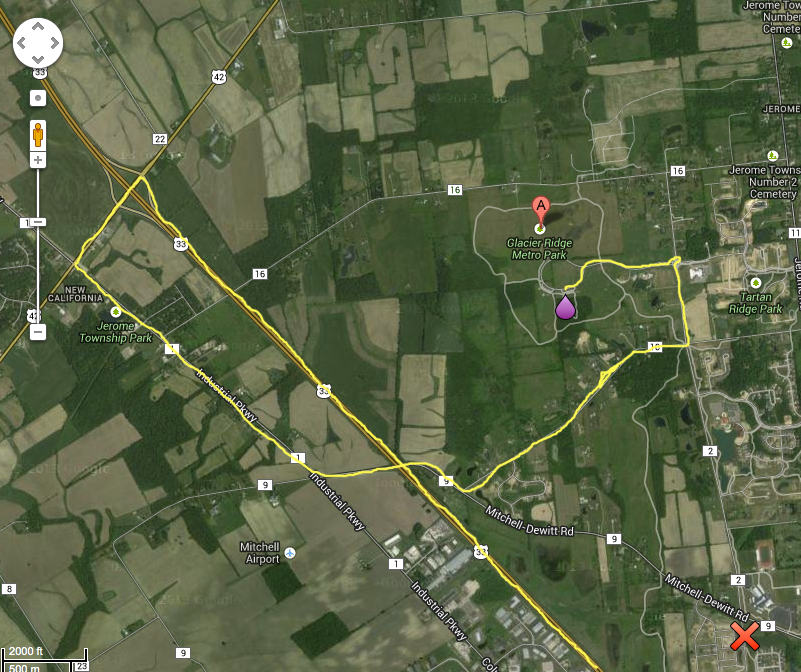

Antrim Park
5800 Olentangy River Road
Columbus, OH 43085
Directions: Antrim Park is located on Olentangy River Road,
1/2 mile south of 161/Dublin Granville Road.
Once you turn into the park, follow the road all the way
down to the bottom parking lot. Follow the footpath under
the bridge and we will meet at the wooden deck.
Three Creeks Metro Park
3860 Bixby Road
Groveport, OH 43125
map
Directions:
From I-270, take U.S. 33 east towards Lancaster about 1 mile.
Turn right on Hamilton Road and go about 1.25 miles
to Bixby Road and turn right.
Entrance is about 0.75 miles on the right.
Glacier Ridge Metro Park
9801 Hyland Croy Road
Plain City, OH 43064
Directions: Glacier Ridge is on the NW side of Columbus
UPDATE!!!!!!!
Construction is blocking northbound Hyland Croy at the Mitchell-Dewitt Rd intersection!
Please use the following instructions instead of what your GPS tells you!
Take 161/33 West from the NW side of the I-270 loop (Exit 17 from I-270).
Take the exit for Route 42/Plain City-Delaware Rd. Turn left onto it.
Turn left at Route 1/Industrial Pkwy.
Make a left at Route 9/Mitchell-Dewitt Rd.
You will pass over 33 and curve right.
Make a left at Route 10/McKitrick Rd.
Make a left at Route 2/Hyland-Croy Rd.
You will approach a traffic circle at the Glacier Park Metro Park entrance.
Proceed into park!

Thomas Worthington High School
300 West Dublin Granville Road
Worthington, OH 43085
Directions: Thomas Worthington High School is located on
the corner of Dublin Granville Road (route 161) and route 315.
The track complex is on the north side of the road.
Park in the large parking lot next to the track.
Meet near entrance to track.
Sharon Woods
Metro Park
6911 Cleveland Avenue
Westerville, OH 43081
Directions: Sharon Woods Metro Park is located on Cleveland Avenue,
1/2 mile north of I-270.
Coming from I-270, turn left into Sharon Woods.
Once inside the park, take the first left after the ranger station
and we will meet in the parking area.
Olentangy Park
~461 Wilson Bridge Road
Worthington, OH 43085
Directions: Olentangy Park is located on Wilson Bridge Road
in Worthington. From I-270, go south on High Street.
At the first light turn right onto Wilson Bridge Road.
The park is approximately 1 mile on the right.
We will meet at the parking lot at the bottom of the hill.
Highbanks
Metro Park
9466 Columbus Pike
Lewis Center, OH 43035
Directions: Highbanks Metro Park is located on Columbus Pike
(US 23) in Lewis Center.
From I‐270, take US 23 north about 3 miles.
The entrance is on the left, just before Powell Road.
Once you enter the park, stay on the main road and go all the
way to the bottom of the hill (about 1.5 miles).
We will meet at the Big Meadows Picnic Area parking lot on the right.
Whetstone
Park of Roses
3909 North High Street
(Columbus Metropolitan Library)
Columbus, OH 43214
Directions: Park of Roses is located off of High Street
approximately 3/4 mile north of North Broadway in Clintonville.
A branch of the Columbus Metropolitan Library is located
at the entrance of the park on North High Street.
Enter the park and go all the way into the parking lot
near the large shelter house.
Road Runner Sports
535 Lakeview Plaza Blvd
Worthington, OH 43085